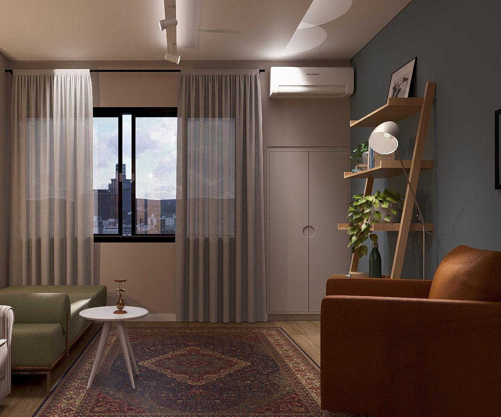
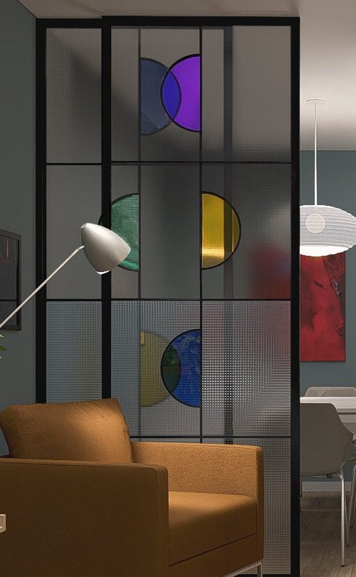

Uma clínica da letra
O inconsciente é tecido à espera de ser lido. Numa análise, aquilo que se diz carrega marcas que não se sabia ter: letras, restos, um modo singular de habitar o corpo. A clínica é o lugar onde cada um pode aprender a lê-las.


Análise para adultos.
Presencial em Uberlândia.
Online para outros estados e países.
Edifício Metropolitan
Av. Getúlio Vargas, 275, sala 708
Centro, Uberlândia/MG